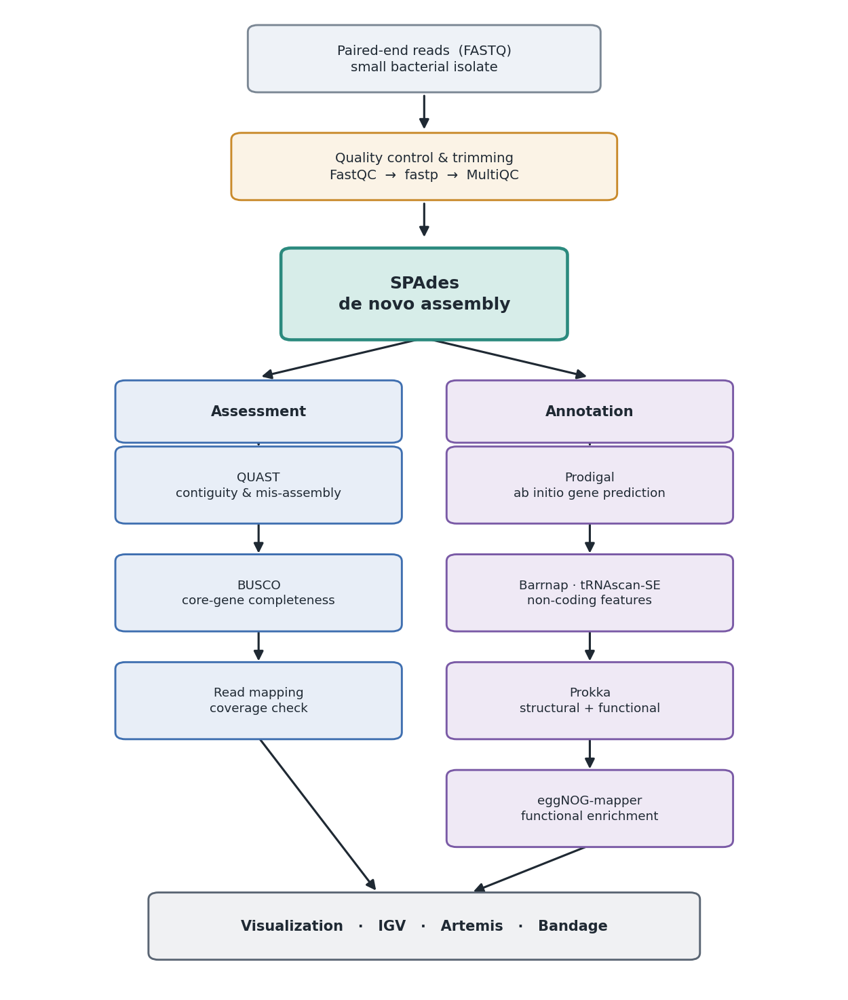

De Novo Genome Assembly & Annotation
De novo assembly, quality assessment, and structural + functional annotation of a small bacterial genome from paired-end short reads (Illumina), run on locally installed HPC modules.
This workshop starts from raw FASTQ reads of a single bacterial isolate, quality-trims them, assembles them into contigs with SPAdes, checks the assembly with QUAST and BUSCO, predicts genes ab initio, and layers on functional annotation. No reference genome is assumed — the genome is built directly from the reads.
Scope is limited to a single-isolate, short-read draft assembly. It does not cover hybrid (long-read) assembly, scaffolding to chromosome level, plasmid reconstruction as a separate track, or comparative genomics across strains. The aim is a reference workflow you can adapt to your own isolate.
Note
The analysis runs on the NYUAD High Performance Computing (HPC) cluster,
but every step works on any standalone machine (server, laptop, desktop)
provided the software stack below is installed. We recommend conda for
installing and maintaining bioinformatics software.
Pipeline overview

The workflow. Reads are quality-trimmed and assembled once with SPAdes into a draft genome; that assembly is then assessed (QUAST, BUSCO, read mapping) and annotated (ab initio gene prediction with Prodigal, non-coding features with Barrnap and tRNAscan-SE, structural + functional annotation with Prokka, and functional enrichment with eggNOG-mapper). The assembly is the hub: every downstream step consumes it.
Steps
Quality-check and trim the reads (FastQC, fastp, MultiQC).
Assemble the trimmed reads into contigs with SPAdes.
Assess the assembly: contiguity and mis-assembly (QUAST), core-gene completeness (BUSCO), and read-mapping coverage.
Predict genes ab initio with Prodigal; find non-coding features with Barrnap (rRNA) and tRNAscan-SE (tRNA).
Produce a combined structural + functional annotation with Prokka.
Add orthology-based functional annotation with eggNOG-mapper.
Visualize the assembly and annotations (IGV, Artemis, Bandage).
Environment
The gencore software stack is split across two module trees, gencore/2 and gencore/3, and they cannot be loaded at the same time. Whenever the pipeline crosses from a tool in one tree to a tool in the other, reset the environment first with:
module purge && module load all
module load gencore/3 # or gencore/2
Almost every stage of this workshop runs under gencore/3. The single
exception is standalone Prodigal, which lives in gencore/2; the ab
initio section below shows that switch explicitly. Each section starts with the
exact module load block it needs, so you can run them independently.
The tools used across the workshop, the tree each is drawn from, and the version pinned here (substitute whatever your installation provides):
Tool |
Module tree |
Module |
|---|---|---|
FastQC |
gencore/3 |
|
fastp |
gencore/3 |
|
MultiQC |
gencore/3 |
|
SPAdes |
gencore/3 |
|
seqkit |
gencore/3 |
|
QUAST |
gencore/3 |
|
BUSCO |
gencore/3 |
|
BWA |
gencore/3 |
|
SAMtools |
gencore/3 |
|
Prodigal |
gencore/2 |
|
Barrnap |
gencore/3 |
|
tRNAscan-SE |
gencore/3 |
|
Prokka |
gencore/3 |
|
eggNOG-mapper |
gencore/3 |
|
Note
Standard Prodigal is only in gencore/2 — gencore/3 ships
prodigal-gv (a variant for viral and giant-virus genes), which is not
what we want for a routine bacterial genome. This is the one place the
pipeline drops back to gencore/2. Parameters can change between tool
versions, so verify flags against the version you actually load.
The tools used across the workshop, with upstream documentation:
FastQC — https://www.bioinformatics.babraham.ac.uk/projects/fastqc/
MultiQC — https://multiqc.info/
SPAdes — https://github.com/ablab/spades
QUAST — https://github.com/ablab/quast
BUSCO — https://busco.ezlab.org/
SAMtools — https://www.htslib.org/
Prodigal — https://github.com/hyattpd/Prodigal
Barrnap — https://github.com/tseemann/barrnap
tRNAscan-SE — http://lowelab.ucsc.edu/tRNAscan-SE/
Prokka — https://github.com/tseemann/prokka
eggNOG-mapper — https://github.com/eggnogdb/eggnog-mapper
Bandage — https://rrwick.github.io/Bandage/
Inputs
Before running the pipeline you need:
Paired-end sequencing reads (
sample_R1.fastq.gzandsample_R2.fastq.gz): gzip-compressed FASTQ, read 1 and read 2 of each pair, from a single bacterial isolate. This workshop uses a public Staphylococcus aureus Illumina run, ERR10035233 — the download commands are in Getting the data below, so you do not need to supply your own reads.A sample name, used as a prefix for derived filenames. We use
samplethroughout.Enough coverage for a good short-read assembly. For a typical bacterium, aim for roughly 50–100×. Much higher is not necessarily better for SPAdes and can be downsampled (the sample run above is deep, so an optional downsample step is included).
All other files in the pipeline are produced by the commands below.
File formats you will encounter (assumed familiar): FASTQ, FASTA, SAM, BAM, GFF3, GenBank (GBK).
Getting the data
We use the NYUAD HPC cluster. Connect, move to your scratch space, and set up a working directory.
Connecting from macOS / Linux
Open Terminal and run
ssh NetID@jubail.abudhabi.nyu.edu. Enter your NYU password when prompted.Move to your scratch directory:
cd $SCRATCH.Create and enter a working directory:
mkdir de_novo_genome && cd de_novo_genome.
Connecting from Windows
Open PuTTY and set Host name =
jubail.abudhabi.nyu.edu, Port =22, then click Open.Enter your NetID and password when prompted.
Move to your scratch directory:
cd $SCRATCH.Create and enter a working directory:
mkdir de_novo_genome && cd de_novo_genome.
Download the sample data
The reads come from the European Nucleotide Archive (ENA), which serves each
run as ready-to-download gzipped FASTQ files over HTTPS. Download read 1 and
read 2 with wget, naming them with the sample_ prefix the rest of this
tutorial expects:
# Read 1 (forward)
wget -O sample_R1.fastq.gz \
https://ftp.sra.ebi.ac.uk/vol1/fastq/ERR100/033/ERR10035233/ERR10035233_1.fastq.gz
# Read 2 (reverse)
wget -O sample_R2.fastq.gz \
https://ftp.sra.ebi.ac.uk/vol1/fastq/ERR100/033/ERR10035233/ERR10035233_2.fastq.gz
The two files total ~500 MB. Confirm the downloads are intact by checking their MD5 checksums against the values ENA publishes:
md5sum sample_R1.fastq.gz sample_R2.fastq.gz
Expected:
68452ef86d67ce52defb1df9774e6843 sample_R1.fastq.gz
0e9e3299709ff2e357d40107e822410a sample_R2.fastq.gz
Note
ERR10035233 is a real S. aureus whole-genome sequencing run, so it is
sequenced deeply — well above the 50–100× that SPAdes needs. The optional
downsample step in Assembly with SPAdes trims it back to a sensible depth
for a faster assembly. To use your own isolate instead, drop your paired
FASTQ files in as sample_R1.fastq.gz and sample_R2.fastq.gz and skip
this download.
Quality control and trimming
Almost all sequencing analysis begins with quality checking and trimming to remove low-quality bases and adapter contamination. This matters especially for assembly: adapter read-through and low-quality tails create false branches in the De Bruijn graph, so cleaning the reads first directly improves the assembly.
This whole stage runs under gencore/3:
module purge && module load all
module load gencore/3
module load fastqc/0.12.1
module load fastp/0.24.0
module load multiqc/1.28
Inspect raw read quality
Run FastQC on both read files:
mkdir -p fastqc_raw
fastqc -t 4 -o fastqc_raw sample_R1.fastq.gz sample_R2.fastq.gz
Open the resulting HTML reports and look at per-base quality, adapter content, and the per-sequence GC distribution (a single clean peak is expected for a pure isolate; a shoulder can indicate contamination).
Trim with fastp
fastp does adapter removal and quality trimming in a single pass and writes its own HTML/JSON report.
fastp \
-i sample_R1.fastq.gz \
-I sample_R2.fastq.gz \
-o sample_R1.trimmed.fastq.gz \
-O sample_R2.trimmed.fastq.gz \
--detect_adapter_for_pe \
--qualified_quality_phred 20 \
--length_required 50 \
--thread 8 \
--html fastp.html \
--json fastp.json
Flags:
--detect_adapter_for_pe— auto-detect adapters from read overlap (no need to specify the adapter sequence).--qualified_quality_phred 20— treat bases below Q20 as low quality.--length_required 50— discard reads shorter than 50 bp after trimming.--thread 8— number of worker threads.
Warning
Do not over-trim. Aggressive quality thresholds shorten reads and remove data that SPAdes’ error correction could otherwise use. Q20 with adapter detection is a sensible default for assembly; there is no need to trim to Q30.
Aggregate reports with MultiQC
If you have several samples, MultiQC collates all the FastQC and fastp reports into one page:
multiqc fastqc_raw fastp.json -n multiqc_report
Re-run FastQC on the trimmed reads if you want a before/after comparison; the adapter-content and per-base-quality plots should visibly improve.
Assembly with SPAdes
SPAdes is a De Bruijn graph assembler that works well for bacterial
isolates. It runs read error correction, then assembles across multiple k-mer
sizes and merges the results. For an isolate genome, the --isolate flag
selects settings tuned for high-coverage single-genome data.
Load the assembly stack (still gencore/3):
module purge && module load all
module load gencore/3
module load spades/4.3.0
module load seqkit/2.10.1
Optional: downsample very deep data
The sample run is sequenced far deeper than SPAdes needs. Excess coverage slows
the assembly without improving it, so subsample the trimmed reads to a target
depth (~100× here). Using the same random seed (-s 100) on both files keeps
the pairs in sync:
seqkit sample -s 100 -p 0.15 sample_R1.trimmed.fastq.gz -o sample_R1.sub.fastq.gz
seqkit sample -s 100 -p 0.15 sample_R2.trimmed.fastq.gz -o sample_R2.sub.fastq.gz
Adjust the proportion (-p) to hit ~100×: coverage ≈ (total bases) /
(genome size), and you can read the total base count from the fastp or FastQC
report. If you downsample, use the *.sub.fastq.gz files as the SPAdes input
below; otherwise use the *.trimmed.fastq.gz files directly.
Run the assembly
spades.py \
--isolate \
-1 sample_R1.sub.fastq.gz \
-2 sample_R2.sub.fastq.gz \
-k 21,33,55,77 \
-t 28 \
-m 100 \
-o spades_assembly
Flags:
--isolate— mode tuned for high-coverage isolate data. (Use--carefulinstead for small genomes if you want SPAdes to run mismatch/indel correction; do not combine the two.)-1/-2— the trimmed read pairs.-k 21,33,55,77— the k-mer sizes to assemble across. SPAdes picks sensible defaults from read length if you omit this.-t 28— CPU threads.-m 100— memory cap in GB.-o spades_assembly— output directory.
Note
A small bacterial genome is light to assemble — it typically finishes in
minutes to an hour or two on an HPC node. If you are submitting via SLURM,
request a single node with 28 CPUs and ~100 GB memory, mirroring the -t
and -m values above.
The key output files in spades_assembly/ are:
contigs.fasta # assembled contigs
scaffolds.fasta # contigs joined into scaffolds where paired-end links allow
assembly_graph.fastg # the assembly graph (for Bandage)
spades.log
Filter very short, low-coverage contigs
Short-read assemblies accumulate tiny, low-coverage contigs that are usually
artefacts. A common cleanup is to keep only contigs above a length threshold
(e.g. 200–500 bp). A quick filter with seqkit:
seqkit seq -m 500 spades_assembly/contigs.fasta > assembly.fasta
Use assembly.fasta as the input to all downstream steps.
Assessing the assembly quality
Before annotating, confirm the assembly is sound. We use three complementary angles: contiguity and mis-assembly statistics, core-gene completeness, and how well the reads map back. All three tools are in gencore/3, so load them once for the whole stage:
module purge && module load all
module load gencore/3
module load quast/5.3.0
module load busco/5.8.3
module load bwa/0.7.19
module load samtools/1.22
Contiguity and mis-assembly with QUAST
QUAST reports the statistics you care about for a draft genome: number of contigs, total length, N50, largest contig, and GC content. Since this is a bacterium with no reference, run it reference-free.
quast.py \
-t 28 \
-o QUAST \
assembly.fasta
Things to look for in QUAST/report.txt:
Total length should be close to the expected genome size for your organism (e.g. ~2.8 Mb for Staphylococcus aureus, ~4.6 Mb for E. coli). Substantially larger can indicate contamination; smaller can indicate insufficient coverage.
# contigs — fewer is better. A few dozen to a couple hundred is typical for a short-read bacterial draft.
N50 — the contig length at which 50% of the assembly is contained in contigs of that length or longer. Higher means a more contiguous assembly.
GC (%) should match the known GC content of the organism.
Note
If you have a closely related reference genome, pass it with -r
reference.fna to additionally get mis-assembly counts, genome fraction,
and mismatches per 100 kb. Without a reference, QUAST still reports all the
contiguity statistics above.
Core-gene completeness with BUSCO
BUSCO assesses completeness by searching for conserved single-copy orthologs. A high proportion of complete, single-copy genes indicates a complete, non-redundant assembly; a high duplicated fraction can signal contamination or an unmerged strain mixture.
Run BUSCO (already loaded with the assessment stack above) in genome mode against a bacterial lineage:
busco \
-i assembly.fasta \
--out BUSCO \
-m genome \
--auto-lineage-prok \
-c 28
-m genome selects genome mode, and --auto-lineage-prok lets BUSCO pick
the best prokaryotic lineage automatically. Results are written to the
BUSCO folder; the short summary reports the familiar
C:98.5%[S:98.1%,D:0.4%] style line.
Read-mapping coverage check
Mapping the trimmed reads back to the assembly confirms that the assembly is well-supported and reveals coverage anomalies (regions of zero coverage should not exist in a genome built from those reads).
bwa index assembly.fasta
bwa mem -t 28 assembly.fasta \
sample_R1.trimmed.fastq.gz sample_R2.trimmed.fastq.gz \
| samtools sort -@ 28 -o aln.sorted.bam -
samtools index aln.sorted.bam
samtools flagstat aln.sorted.bam > mapping_stats.txt
samtools depth -a aln.sorted.bam | \
awk '{sum+=$3; n++} END {print "Mean coverage:", sum/n}'
A high overall mapping rate (typically >95%) and a mean coverage in the expected range confirm a healthy assembly.
Ab initio gene prediction
With QC passed, annotate the genome. Bacterial gene prediction is well-suited to ab initio methods because genes are densely packed, mostly single-exon (no splicing), and have clear ribosome-binding signals.
Predict protein-coding genes with Prodigal
Prodigal is the standard ab initio gene finder for prokaryotes. It predicts coding sequences and outputs proteins, nucleotide CDS, and a GFF.
This is the one step that needs gencore/2, so purge and switch trees:
module purge && module load all
module load gencore/2
module load prodigal/2.6.3
prodigal \
-i assembly.fasta \
-a proteins.faa \
-d genes.fna \
-f gff \
-o genes.gff \
-p single
Flags:
-i— the assembly.-a proteins.faa— predicted protein translations.-d genes.fna— predicted gene nucleotide sequences.-f gff -o genes.gff— GFF-format coordinates.-p single— single-genome mode (use-p metafor metagenomes).
Find non-coding features
Ab initio protein prediction ignores structural RNAs. Add ribosomal RNA genes with Barrnap and transfer RNAs with tRNAscan-SE. Both are back in gencore/3, so purge and switch trees again:
module purge && module load all
module load gencore/3
module load barrnap/1.10.6
module load trnascan-se/2.0.13
barrnap --kingdom bac --threads 28 assembly.fasta > rRNA.gff
tRNAscan-SE -B -o tRNA.out -f tRNA.structs assembly.fasta
--kingdom bac tells Barrnap to use the bacterial rRNA models, and -B
puts tRNAscan-SE in bacterial mode.
Combined annotation with Prokka
Running each tool by hand is instructive, but in practice Prokka wraps the whole prokaryotic annotation process into a single command: it calls Prodigal for CDS, Barrnap for rRNA, and tRNAscan-SE / Aragorn for tRNA, then assigns functional labels by searching the predicted proteins against curated databases. It emits standard, submission-ready files (GFF3, GenBank, FAA, FFN, and a summary).
Prokka is in gencore/3 (the same tree the previous step left loaded, shown here in full so the step stands alone):
module purge && module load all
module load gencore/3
module load prokka/1.14.6
prokka \
--outdir prokka \
--prefix sample \
--kingdom Bacteria \
--genus Staphylococcus \
--species aureus \
--cpus 28 \
--force \
assembly.fasta
Flags:
--outdir prokka/--prefix sample— output folder and filename prefix.--kingdom Bacteria— use the bacterial annotation mode.--genus/--species— used for labeling; supplying them also lets Prokka prioritize a genus-specific database if one is installed.--cpus 28— CPU threads.--force— overwrite an existing output folder.
The prokka folder contains:
sample.gff # master annotation (all features, GFF3)
sample.gbk # GenBank format, for Artemis / submission
sample.faa # annotated protein sequences
sample.ffn # annotated CDS nucleotide sequences
sample.tsv # tab-delimited feature table with product names
sample.txt # summary counts (CDS, rRNA, tRNA, etc.)
Note
Prokka assigns product names from its bundled databases (UniProt, Pfam via
HMMER, and others). Genes it cannot confidently label are annotated as
hypothetical protein — a normal and expected fraction of any bacterial
genome. The next step adds richer functional context to those.
Functional annotation with eggNOG-mapper
Prokka gives you gene names and products; eggNOG-mapper adds orthology-based functional annotation — COG categories, GO terms, KEGG pathways and KOs, and EC numbers — by placing each protein into precomputed orthologous groups. This is what turns a list of genes into something you can analyze for pathway content and functional enrichment.
eggNOG-mapper is in gencore/3, so it runs in the same tree as Prokka:
module purge && module load all
module load gencore/3
module load eggnog-mapper/2.1.12
Run it on the Prokka protein output:
emapper.py \
-i prokka/sample.faa \
-o sample_eggnog \
--itype proteins \
--cpu 28 \
--data_dir /path/to/eggnog-mapper-db
Flags:
-i prokka/sample.faa— the annotated proteins from Prokka.-o sample_eggnog— output prefix.--itype proteins— the input is protein sequences.--cpu 28— CPU threads.--data_dir— path to the downloaded eggNOG database (see the note below).
Note
The eggNOG-mapper software is in gencore/3, but the eggNOG database
(~50 GB) is separate and is not bundled with the module — you need to
download it yourself before running emapper.py. Download the latest
database (currently release 5.0.2) from the EMBL eggNOG server:
http://eggnog5.embl.de/download/emapperdb-5.0.2/
Fetch it into a directory of your choice, then pass that directory to
--data_dir, for example --data_dir /path/to/eggnog-mapper-db. The
files must sit directly inside that directory. As a convenience,
eggNOG-mapper also ships download_eggnog_data.py, which downloads and
unpacks the same database for you:
download_eggnog_data.py --data_dir /path/to/eggnog-mapper-db
You only need to do this once; reuse the same --data_dir for all future
runs.
The main output is sample_eggnog.emapper.annotations, a tab-delimited
table with one row per protein giving its best orthologous group, predicted
gene name, COG category, GO terms, KEGG KOs and pathways, and a free-text
description. Join this back to the Prokka locus tags to build a fully
annotated gene table for your genome.
Visualization
With the assembly and annotations in hand, inspect them visually. These are interactive GUI tools — run them from a desktop session (or locally on your own machine) rather than a batch job.
Bandage — load
spades_assembly/assembly_graph.fastgto view the assembly graph. Tangles and unresolved loops show where the assembly is fragmented, and separate circular components often correspond to plasmids.Artemis — open
prokka/sample.gbkto browse genes, strands, and products along the genome. Artemis is available asartemis/18.2.0in gencore/2.IGV — load
assembly.fastawithaln.sorted.bamandprokka/sample.gffto inspect read support and coverage under each annotated feature.
This concludes the workshop. For questions or comments, raise an issue on the workshop repository.